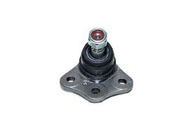

Também chamado de articulação ou pino esférico, o pivô é uma peça essencial para o funcionamento e segurança do veículo. Ele conecta o chassi do carro aos amortecedores e é responsável pelo movimento das rodas. É importante ficar atento a sinais de desgaste, como folgas na direção, barulhos agudos nas curvas, desníveis e batidas mais secas no impacto.